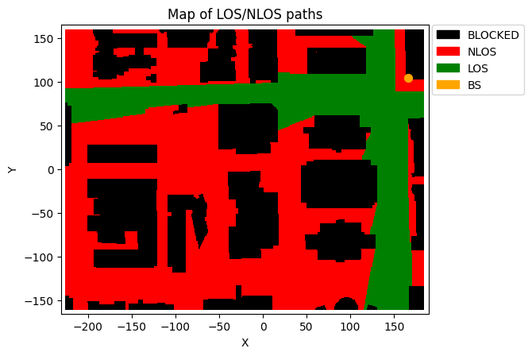
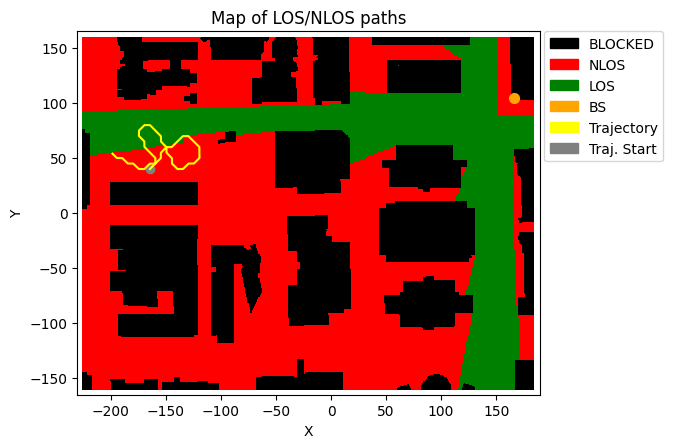
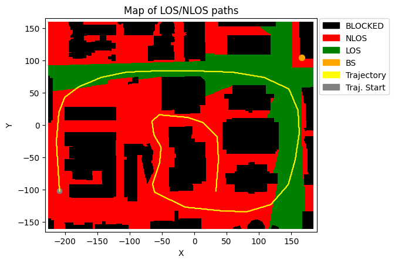

Working with DeepMIMO Scenarios
NeoRadium’s DeepMimoData class can be used with DeepMIMO scenarios to generate trajectories of user movements within a ray-tracing environment. By employing the TrjChannel class, designed as a trajectory-based channel model, you can construct sequences of channels that adhere to temporal and spatial consistency, based on the provided trajectory.
This notebook shows how to:
Use the DeepMimoData class to open a DeepMIMO scenario
Use its visialization method to draw the scenario map
Create randomly generated trajectories
Create your own trajectories interactively on the scenario map
Draw the generated trajectory on the map
[1]:
import numpy as np
import os, time
import scipy
import matplotlib.pyplot as plt
from neoradium import DeepMimoData, Carrier, random
[2]:
# Replace this with the folder on your computer where you store DeepMIMO scenarios
dataFolder = "/data/RayTracing/DeepMIMO/Scenarios/V4/"
DeepMimoData.setScenariosPath(dataFolder)
# Get information about a scenario:
DeepMimoData.showScenarioInfo("asu_campus_3p5")
Scenario: asu_campus_3p5
File Version: 4.0.0a3
Carrier Frequency: 3.5 GHz
Data Folder: /Users/shahab/data/RayTracing/DeepMIMO/Scenarios/V4/asu_campus_3p5/
UE Grids: (1)
rx_grid: ID:0, Num UEs:131,931, xRange:-225.55..184.45, yRange:-160.17..159.83
Base Stations: (1)
BS: ID:1, Position:(166.00,104.00,22.00)
[3]:
# Using the above information we create a DeepMimoData object for user grid 0 and base station 1:
deepMimoData = DeepMimoData("asu_campus_3p5", baseStationId=1, gridId=0)
deepMimoData.print()
DeepMimoData Properties:
Scenario: asu_campus_3p5
Version: 4.0.0a3
UE Grid: rx_grid
Grid Size: 411 x 321
Base Station: BS (at [166. 104. 22.])
Total Grid Points: 131,931
UE Spacing: [1. 1.]
UE bounds (xyMin, xyMax) [-225.55 -160.17], [184.45 159.83]
UE Height: 1.50
Carrier Frequency: 3.5 GHz
Num. paths (Min, Avg, Max): 0, 6.21, 10
Num. total blockage: 46774
LOS percentage: 19.71%
[4]:
# Draw a map of the scenario showing the Line-Of-Sight (LOS) vs Non-Line-Of-Sight (NLOS) communication
# between the UEs and the base station.
deepMimoData.drawMap("LOS-NLOS") # Also try "1stPathDelays" or "1stPathPowers"
[4]:
(<Figure size 742.518x471.734 with 1 Axes>,
<Axes: title={'center': 'Map of LOS/NLOS paths'}, xlabel='X', ylabel='Y'>)

Creating Random Trajectory
[5]:
# Now let's create a random trajectory:
random.setSeed(1234) # Remark this out if you want new random trajectories on each run.
# The points on a trajectory are determined by the timing of slots within 3GPP subframes, which are
# governed by a specific numerology. The “getRandomTrajectory” function utilizes a BandwidthPart object
# to extract the necessary timing information. Therefore, let’s first create the Carrier and BandwidthPart
# objects.
carrier = Carrier(startRb=0, numRbs=25, spacing=15) # Carrier with 25 Resource Blocks, 15KHz subcarrier spacing
bwp = carrier.curBwp # The only bandwidth part in the carrier
# We need to specify the bounding box of the trajectory. Here we select a wide area
# from the map that has both LOS and NLOS points:
xyBounds = np.array([[-210, 40], [-120, 100]]) # [[minX, minY], [maxX, maxY]]
segLen = 5 # The number of grid points on the shortest segment
trajectory = deepMimoData.getRandomTrajectory(xyBounds, segLen, bwp,
trajLen=200, # Number of grid points on trajectory
speedMps=1.2) # Speed in mps (Walking)
# Print the trajectory information:
trajectory.print()
# Draw the Map with the trajectory:
deepMimoData.drawMap("LOS-NLOS", trajectory)
Trajectory Properties:
start (x,y,z): (-164.55, 39.83, 1.50)
No. of points: 203482
curIdx: 0 (0.00%)
curSpeed: [0.85 0.85 0. ]
Total distance: 244.15 meters
Total time: 203.481 seconds
Average Speed: 1.200 mps
Carrier Frequency: 3.5 GHz
Paths (Min, Avg, Max): 3, 8.87, 10
Totally blocked: 0
LOS percentage: 27.38%
[5]:
(<Figure size 742.518x471.734 with 1 Axes>,
<Axes: title={'center': 'Map of LOS/NLOS paths'}, xlabel='X', ylabel='Y'>)

Interactively trajectory generation
[6]:
# You can also define your own trajectory interactively by selecting points on the map. The function
# “interactiveTrajPoints” can be used to obtain a list of points on the map representing the trajectory.
# This function opens a new window displaying the current scenario’s map, and you can click on the points
# of the trajectory one by one. Use left-click to select new points and right-click to undo last point.
points = deepMimoData.interactiveTrajPoints(mapType="LOS-NLOS")
print("Selected Points:\n",points)
Running the interactive map for 'asu_campus_3p5'...
Done. 32 points selected.
Selected Points:
[[-2.08244352e+02 -1.02666732e+02]
[-2.13703861e+02 -2.53236924e+01]
[-2.09154271e+02 1.97172539e+01]
[-2.00055090e+02 4.24652066e+01]
[-1.80036891e+02 5.88437325e+01]
[-1.43185208e+02 7.38573813e+01]
[-1.04058729e+02 8.20466442e+01]
[-5.49231514e+01 8.38664805e+01]
[ 1.26894117e-01 8.43214395e+01]
[ 5.83616530e+01 8.20466442e+01]
[ 1.07042272e+02 7.43123403e+01]
[ 1.46623709e+02 5.61139782e+01]
[ 1.60272481e+02 2.29019673e+01]
[ 1.62092317e+02 -1.25848389e+01]
[ 1.56632809e+02 -5.30761947e+01]
[ 1.45713791e+02 -9.22026733e+01]
[ 1.17961289e+02 -1.23594848e+02]
[ 8.11096057e+01 -1.34058906e+02]
[ 4.47128814e+01 -1.33603947e+02]
[-1.35218775e+01 -1.27234520e+02]
[-6.17475372e+01 -1.04031609e+02]
[-6.44772915e+01 -9.12927552e+01]
[-5.40132333e+01 -5.80807443e+01]
[-5.12834789e+01 -3.39679144e+01]
[-6.26574553e+01 -1.48596342e+01]
[-6.58421687e+01 5.61352322e+00]
[-5.44681923e+01 1.60775815e+01]
[-1.07921232e+01 1.15279909e+01]
[ 1.33207067e+01 3.79368701e+00]
[ 3.56137003e+01 -1.84993066e+01]
[ 3.74335365e+01 -5.44410719e+01]
[ 3.33389050e+01 -1.01756813e+02]]
[7]:
# Now create a trajectory using the selected points:
trajectory = deepMimoData.trajectoryFromPoints(points, bwp, speedMps=14)
# Print the trajectory information:
trajectory.print()
# Draw the Map with the trajectory:
deepMimoData.drawMap("LOS-NLOS", trajectory)
Trajectory Properties:
start: -208.55 -102.17 1.50
No. of points: 89407
curIdx: 0 (0.00%)
curSpeed: [ 0. 14.08 0. ]
Total distance: 1257.01 meters
Total time: 89.406 seconds
Average Speed: 14.060 mps
Carrier Frequency: 3.5 GHz
Num. paths (Min, Avg, Max): 3, 9.10, 10
Num. totally blocked points: 0
LOS percentage: 43.25%
[7]:
(<Figure size 742.518x471.734 with 1 Axes>,
<Axes: title={'center': 'Map of LOS/NLOS paths'}, xlabel='X', ylabel='Y'>)

[ ]: